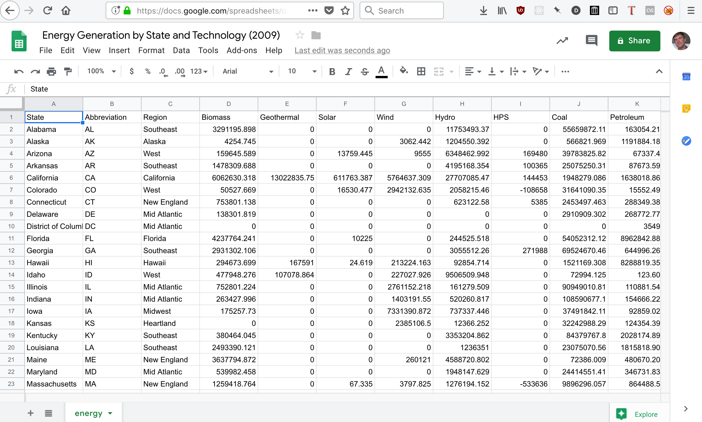

Data Analysis 1
Pandas

| Data Analysis |
| Data Structures |
| Control Structures |


pip3 install pandas
>>> import pandas
>>>
>>> data = {
'apples': [3, 2, 0, 1],
'oranges': [0, 3, 7, 2]
}
>>>
>>> df = pandas.DataFrame(data)
>>> df.head() apples oranges
0 3 0
1 2 3
2 0 7
3 1 2 name area built renovated longitude latitude
0 Energy Plant 39655.00 1931 2005 -76.935606 38.985843
1 Service Building 84030.42 1940 1970 -76.935830 38.986042
2 Ritchie Coliseum 59791.00 1932 1996 -76.936447 38.985035
3 Building 006 17716.77 1957 1970 -76.934517 38.985800
4 Pocomoke Building 30045.91 1946 2013 -76.937115 38.9829560 1931
1 1940
2 1932
3 1957
4 1946
Name: built, dtype: int6419311969.3433476394852017name Xfinity Center
area 533481
built 2017
renovated 2017
longitude -76.9247
latitude 39.0071>>> df.describe()
area built renovated longitude latitude
count 233.000000 233.000000 233.000000 233.000000 233.000000
mean 58971.509614 1969.343348 1978.253219 -76.941710 38.988436
std 93212.469817 26.213360 13.784996 0.006074 0.005428
min 78.010000 1798.000000 1952.000000 -76.956092 38.976139
25% 7136.180000 1954.000000 1970.000000 -76.945787 38.983940
50% 17891.870000 1966.000000 1970.000000 -76.941743 38.988125
75% 65321.410000 1991.000000 1986.000000 -76.937094 38.991909
max 533481.040000 2017.000000 2017.000000 -76.924696 39.007068